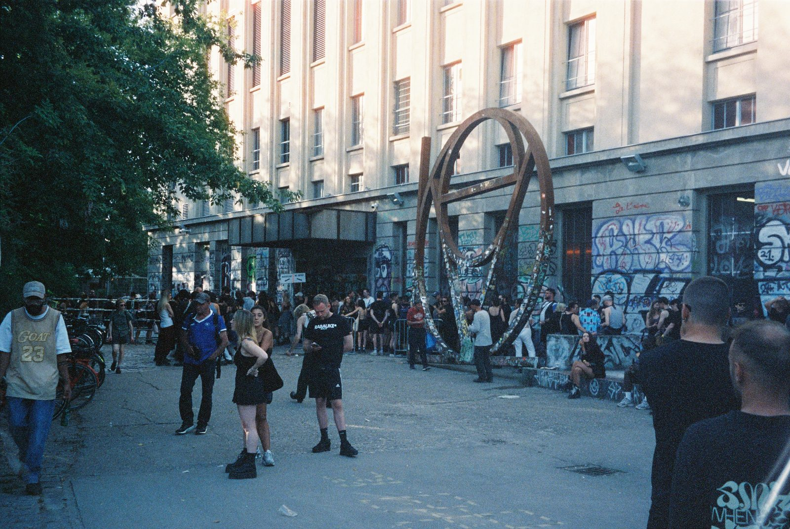

The first time I visited Berlin, my life was in crisis. Everything that I knew, the life I had built, was all in question. I had recently come out, lost my closest friends because of it, and was on my first stop while traveling in search of finding myself truly.
I really knew nothing about Berlin previous, it was just the cheapest flight to Europe. I stepped off the plane and immediately noticed a unique culture very different than the American Midwest. It was distinctly German, but glimpses of a deeper alternative subculture fascinated me. It was unexpected, but I had to explore it.
The confidence in uniqueness that the people of Berlin demonstrated was fascinating, it was intoxicating. This was a place that I could be anyone I wanted to be and no one would care even a little. The post-industrial gothic aesthetic... I thought, "This is it. This is the inspiration for who I want to be." The further east I went, the more I resonated with the people, the culture, the music, the grit.
For the first time in my life, I could reinvent myself. I could develop a worldview from the ground up. Redefine who it is that I am. It started with debauchery and hedonism, but as it turned out, that was an incredible foundation to build myself into the person that I wanted to be.
As many people will attest, the metaphoric center of Berlin culture is this etherial, monolithic building in Kreuzberg known as Berghain. More than anywhere else, discovering Berghain changed my life. In Berghain, it's where I discovered myself.

Berghain has become a regular pilgrimage in my life. A couple times a year, I pilgimage to the deep recesses of my psyche that I can only reach in that building. Each time I've made it past the scrutenizing doorman and into the building, I've found myself met with a new perspective and a new understanding of the world. The building, the people, the music and the magic that is the Berghain experience has truly formed who I am as an adult.
When I decided to build this site, I wanted it to be meticulously designed to accurately reflect who I am through the language of a 3D space. The visitor of the site within seconds should be able to develop a reasonable understanding of my identity. It was without question that it would be a space in resemblance of Berghain.
I hope you enjoy it! There are a TON of little easter eggs. See what you can find! Thank you for reading!
The Technical Deep Dive
Building an immersive 3D personal site that feels like stepping into a real space required work I had not previously explored.
Three.js
The entire 3D experience is built on Three.js. The scene uses a perspective camera with orbit controls (locked by default for a cinematic feel), fog for atmosphere, and shadow mapping for realistic lighting. Assets are loaded using GLTFLoader with Meshopt compression, which dramatically reduces file sizes while maintaining visual quality.
Post-Processing Pipeline
The distinctive visual style comes from a custom post-processing pipeline chained together:
- Subtle pixelation for a retro-digital feel
- Bloom lighting for the rave lights
- CRT Shader, adding an element of analogue to the scene
The CRT shader is custom GLSL that applies barrel distortion (curved screen edges), chromatic aberration (RGB color fringing), animated scanlines, film grain noise, and a vignette effect.
Spatial Audio System
I didn't want the techno to just play from the speakers. I wanted it to come from somewhere. With Three.js's PositionalAudio, the music is positioned in 3D space underneath the desk scene, where the club is. A BiquadFilter creates a low-pass "muffled through walls" effect that opens up as the door opens. There's also a ConvolverNode generating real-time reverb with a procedurally generated impulse response. The reverb tail is literally computed by filling audio buffers with decaying noise.
The camera rumble effect syncs to 140 BPM using a sawtooth wave with exponential decay. It shakes the whole scene to the beat, creating a feeling of a room dominated bass.
A Real Linux Terminal
I started by making a simulated terminal with very basic commands. Then I realized, I could just use a real terminal with modern tools!
- xterm.js – Terminal emulator that runs in the browser
- E2B Sandbox – Cloud infrastructure that spins up isolated Linux containers on-demand
- WebSocket PTY – Real-time bidirectional communication with true pseudo-terminal support
- Canvas Texture – The xterm output is rendered to a canvas, which becomes a Three.js texture mapped onto the 3D screen (this was so hard to figure out)
When you click on the computer, the system creates a sandboxed Linux session, connects via WebSocket, and streams PTY output through xterm.js. This then gets rendered onto the 3D monitor in real-time. You get full shell access with command history, vim, even python! See what you can find in there!
The Notepad
The notepad on the desk fetches blog posts from my blog's API and renders them onto a canvas texture with hand-drawn styling. UV coordinates from raycasting let me detect exactly where you're clicking on the paper, enabling interactive links. The "ruled paper" effect uses canvas drawing APIs to create horizontal lines, a red margin, and a cursive font for the title.
State Machine Architecture
Managing all these effect sequences requires careful state management. I've never worked in gamedev, so this was a new experience for me in this way. A central AppState object tracks:
- Camera focus states (screen, notepad, iPod, emergency button)
- Animation timestamps for smooth transitions
- Audio states (playing, muffled, spatial positions)
- Object references for dynamic manipulation
- Horror game state (monster visibility, jumpscare timing)
The animation loop runs at 60fps, checking timestamps and interpolating values with easing functions for smooth camera movements and state transitions.
Infrastructure
The backend is a FastAPI server handling:
- E2B session management (starting/stopping sandboxed terminals)
- WebSocket routing for real-time terminal I/O
- Last.fm API integration for the "now playing" iPod feature
- Asset proxying from S3-compatible storage with aggressive caching
- Analytics event tracking (imma freak like that)
Everything is deployed on Railway with PostgreSQL for session state and Alembic for database migrations.
Performance Considerations
A 3D web experience needs to run on everything from gaming PCs to phones. Key optimizations include: fff
- Meshopt compression – Models are 60-80% smaller than uncompressed glTF
- Texture atlasing – Fewer draw calls by combining textures
- Aggressive caching – 1 year cache headers on static assets
- Lazy loading – Terminal session only initializes when you click the screen
Codegen
Previous to LLM codegen tools, this project would have taken me months to complete. Managing state and animations in a way that feels cohesive in action would have been tremendously difficult. Instead of painstakingly adjusting position and animation constants, I could ask Claude to "move the object to the right and animate more quickly." This kept me in the creativer flow and able to focus on the design and implementation of the project.
I had a ton of fun making this! I'm really proud of it. Let me know what you think! @braelyn_ai.